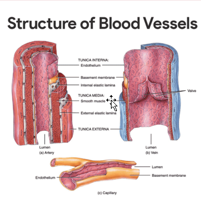
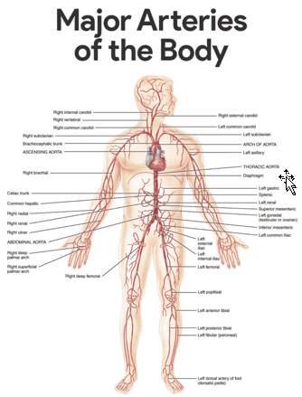
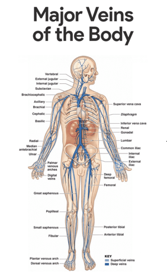
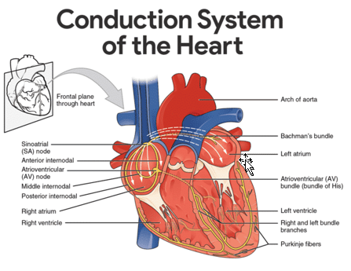
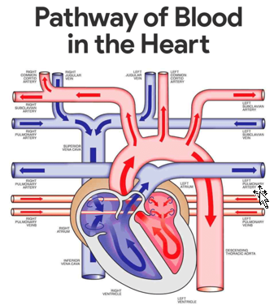

The heart has four hollow chambers, or cavities: two atria and two ventricles.
The great blood vessels provide a pathway for the entire cardiac circulation to proceed.
• Atrioventricular valves. Atrioventricular or AV valves are located between the atrial and ventricular chambers on each side, and they prevent backflow into the atria when the ventricles contract.
• Bicuspid valves. The left AV valve- the bicuspid or mitral valve, consists of two flaps, or cusps, of endocardium.
• Tricuspid valve. The right AV valve, the tricuspid valve, has three flaps.
• Semilunar valve. The second set of valves, the semilunar valves, guards the bases of the two large arteries leaving the ventricular chambers, thus they are known as the pulmonary and aortic semilunar valves.
Cardiac Circulation Vessels
Although the heart chambers are bathed with blood almost continuously, the blood contained in the heart does not nourish the myocardium.
• Coronary arteries. The coronary arteries branch from the base of the aorta and encircle the heart in the coronary sulcus (atrioventricular groove) at the junction of the atria and ventricles, and these arteries are compressed when the ventricles are contracting and fill when the heart is relaxed.
• Cardiac veins. The myocardium is drained by several cardiac veins, which empty into an enlarged vessel on the posterior of the heart called the coronary sinus.
Blood Vessels
Blood circulates inside the blood vessels, which form a closed transport system, the so-called vascular system.
• Arteries. As the heart beats, blood is propelled into large arteries leaving the heart.
• Arterioles. It then moves into successively smaller and smaller arteries and then into arterioles, which feed the capillary beds in the tissues.
• Veins. Capillary beds are drained by venules, which in turn empty into veins that finally empty into the great veins entering the heart.
Tunics
Except for the microscopic capillaries, the walls of the blood vessels have three coats or tunics.

• Tunica intima. The tunica intima, which lines the lumen, or interior, of the vessels, is a thin layer of endothelium resting on a basement membrane and decreases friction as blood flows through the vessel lumen.
• Tunica media. The tunica media is the bulky middle coat which mostly consists of smooth muscle and elastic fibers that constrict or dilate, making the blood pressure increase or decrease.
• Tunica externa. The tunica externa is the outermost tunic composed largely of fibrous connective tissue, and its function is basically to support and protect the vessels.
Major Arteries of the Systemic Circulation
The major branches of the aorta and the organs they serve are listed next in sequence from the heart.

Arterial Branches of the Ascending Aorta
The aorta springs upward from the left ventricle of heart as the ascending aorta.
• Coronary arteries. The only branches of the ascending aorta are the right and left coronary arteries, which serve the heart.
Arterial Branches of the Aortic Arch
The aorta arches to the left as the aortic arch.
• Brachiocephalic trunk. The brachiocephalic trunk, the first branch off the aortic arch, splits into the right common carotid artery and right subclavian artery.
• Left common carotid artery. The left common carotid artery is the second branch off the aortic arch and it divides, forming the left internal carotid, which serves the brain, and the left external carotid, which serves the skin and muscles of the head and neck.
• Left subclavian artery. The third branch of the aortic arch, the left subclavian artery, gives off an important branch- the vertebral artery, which serves part of the brain.
• Axillary artery. In the axilla, the subclavian artery becomes the axillary artery.
• Brachial artery. the subclavian artery continues into the arm as the brachial artery, which supplies the arm.
• Radial and ulnar arteries. At the elbow, the brachial artery splits to form the radial and ulnar arteries, which serve the forearm.
Arterial Branches of the Thoracic Aorta
The aorta plunges downward through the thorax, following the spine as the thoracic aorta.
• Intercostal arteries. Ten pairs of intercostal arteries supply the muscles of the thorax wall.
Arterial Branches of the Abdominal Aorta
Finally, the aorta passes through the diaphragm into the abdominopelvic cavity, where it becomes the abdominal aorta.
• Celiac trunk. The celiac trunk is the first branch of the abdominal aorta and has three branches: the left gastric artery supplies the stomach; the splenic artery supplies the spleen, and the common hepatic artery supplies the liver.
• Superior mesenteric artery. The unpaired superior mesenteric artery supplies most of the small intestine and the first half of the large intestine or colon.
• Renal arteries. The renal arteries serve the kidneys.
• Gonadal arteries. The gonadal arteries supply the gonads, and they are called ovarian arteries in females while in males they are testicular arteries.
• Lumbar arteries. The lumbar arteries are several pairs of arteries serving the heavy muscles of the abdomen and trunk walls.
• Inferior mesenteric artery. The inferior mesenteric artery is a small, unpaired artery supplying the second half of the large intestine.
• Common iliac arteries. The common iliac arteries are the final branches of the abdominal aorta.
Major Veins of the Systemic Circulation
Major veins converge on the venae cavae, which enter the right atrium of the heart.

Veins Draining into the Superior Vena Cava
Veins draining into the superior vena cava are named in a distal-to-proximal direction; that is, in the same direction the blood flows into the superior vena cava.
• Radial and ulnar veins. The radial and ulnar veins are deep veins draining the forearm; they unite to form the deep brachial vein, which drains the arm and empties into the axillary vein in the axillary region.
• Cephalic vein. The cephalic vein provides for the superficial drainage of the lateral aspect of the arm and empties into the axillary vein.
• Basilic vein. The basilic vein is a superficial vein that drains the medial aspect of the arm and empties into the brachial vein proximally.
• Median cubital vein. The basilic and cephalic veins are joined at the anterior aspect of the elbow by the median cubital vein, often chosen as the site for blood removal for the purpose of blood testing.
• Subclavian vein. The subclavian vein receives venous blood from the arm through the axillary vein and from the skin and muscles of the head through the external jugular vein.
• Vertebral vein. The vertebral vein drains the posterior part of the head.
• Internal jugular vein. The internal jugular vein drains the dural sinuses of the brain.
• Brachiocephalic veins. The right and left brachiocephalic veins are large veins that receive venous drainage from the subclavian, vertebral, and internal jugular veins on their respective sides.
• Azygos vein. The azygos vein is a single vein that drains the thorax and enters the superior vena cava just before it joins the heart.
Veins Draining into the Inferior Vena Cava
The inferior vena cava, which is much longer than the superior vena cava, returns blood to the heart from all body regions below the diaphragm.
• Tibial veins. The anterior and posterior tibial veins and the fibular vein drain the leg; the posterior tibial veins becomes the popliteal vein at the knee and then the femoral vein in the thigh; the femoral vein becomes the external iliac vein as it enters the pelvis.
• Great saphenous veins. The great saphenous veins are the longest veins in the body; they begin at the dorsal venous arch in the foot and travel up the medial aspect of the leg to empty into the femoral vein in the thigh.
• Common iliac vein. Each common iliac vein is formed by the union of the external iliac vein and the internal iliac vein which drains the pelvis.
• Gonadal vein. The right gonadal vein drains the right ovary in females and the right testicles in males; the left gonadal veins empties into the left renal veins superiorly.
• Renal veins. The right and left renal veins drain the kidneys.
• Hepatic portal vein. The hepatic portal vein is a single vein that drains the digestive tract organs and carries this blood through the liver before it enters the systemic circulation.
• Hepatic veins. The hepatic veins drain the liver.
Physiology of the Heart
As the heart beats or contracts, the blood makes continuous round trips- into and out of the heart, through the rest of the body, and then back to the heart- only to be sent out again.
Intrinsic Conduction System of the Heart
The spontaneous contractions of the cardiac muscle cells occurs in a regular and continuous way, giving rhythm to the heart.

• Cardiac muscle cells. Cardiac muscle cells can and do contract spontaneously and independently, even if all nervous connections are severed.
• Rhythms. Although cardiac muscles can beat independently, the muscle cells in the different areas of the heart have different rhythms.
• Intrinsic conduction system. The intrinsic conduction system, or the nodal system, that is built into the heart tissue sets the basic rhythm.
• Composition. The intrinsic conduction system is composed of a special tissue found nowhere else in the body; it is much like a cross between a muscle and nervous tissue.
• Function. This system causes heart muscle depolarization in only one direction- from the atria to the ventricles; it enforces a contraction rate of approximately 75 beats per minute on the heart, thus the heart beats as a coordinated unit.
• Sinoatrial (SA) node. The SA node has the highest rate of depolarization in the whole system, so it can start the beat and set the pace for the whole heart; thus the term “pacemaker“.
• Atrial contraction. From the SA node, the impulse spread through the atria to the AV node, and then the atria contract.
• Ventricular contraction. It then passes through the AV bundle, the bundle branches, and the Purkinje fibers, resulting in a “wringing” contraction of the ventricles that begins at the heart apex and moves toward the atria.
• Ejection. This contraction effectively ejects blood superiorly into the large arteries leaving the heart.
The Pathway of the Conduction System
The conduction system occurs systematically through:
- SA node. The depolarization wave is initiated by the sinoatrial node.
- Atrial myocardium. The wave then successively passes through the atrial myocardium.
- Atrioventricular node. The depolarization wave then spreads to the AV node, and then the atria contract.
- AV bundle. It then passes rapidly through the AV bundle.
Bundle branches and Purkinje fibers. The wave then continues on through the right and left bundle branches, and then to the Purkinje fibers in the ventricular walls, resulting in a contraction that ejects blood, leaving the heart
Cardiac Cycle and Heart Sounds
In a healthy heart, the atria contract simultaneously, then, as they start to relax, contraction of the ventricles begin.
• Systole. Systole means heart contraction.
• Diastole. Diastole means heart relaxation.
• Cardiac cycle. The term cardiac cycle refers to the events of one complete heart beat, during which both atria and ventricles contract and then relax.
• Length. The average heart beats approximately 75 times per minute, so the length of the cardiac cycle is normally about 0.8 second.
• Mid-to-late diastole. The cycle starts with the heart in complete relaxation; the pressure in the heart is low, and blood is flowing passively into and through the atria into the ventricles from the pulmonary and systemic circulations; the semilunar valves are closed, and the AV valves are open; then the atria contract and force the blood remaining in their chambers into the ventricles.
• Ventricular systole. Shortly after, the ventricular contraction begins, and the pressure within the ventricles increases rapidly, closing the AV valves; when the intraventricular pressure is higher than the pressure in the large arteries leaving the heart, the semilunar valves are forced open, and blood rushes through them out of the ventricles; the atria are relaxed, and their chambers are again filling with blood.
• Early diastole. At the end of systole, the ventricles relax, the semilunar valves snap shut, and for a moment the ventricles are completely closed chambers; the intraventricular pressure drops and the AV valves are forced open; the ventricles again begin refilling rapidly with blood, completing the cycle.
• First heart sound. The first heart sound, “lub”, is caused by the closing of the AV valves.
• Second heart sound. The second heart sound, “dub”, occurs when the semilunar valves close at the end of systole
Cardiac Output
Cardiac output is the amount of blood pumped out by each side of the heart in one minute. It is the product of the heart rate and the stroke volume.
• Stroke volume. Stroke volume is the volume of blood pumped out by a ventricle with each heartbeat.
• Regulation of stroke volume. According to Starling’s law of the heart, the critical factor controlling stroke volume is how much the cardiac muscle cells are stretched just before they contract; the more they are stretched, the stronger the contraction will be; and anything that increases the volume or speed of venous return also increases stroke volume and force of contraction.
• Factors modifying basic heart rate.The most important external influence on heart rate is the activity of the autonomic nervous system, as well as physical factors (age, gender, exercise, and body temperature).
Physiology of Circulation
A fairly good indication of the efficiency of a person’s circulatory system can be obtained by taking arterial blood and blood pressure measurements.
Cardiovascular Vital Signs
Arterial pulse pressure and blood pressure measurements, along with those of respiratory rate and body temperature, are referred to collectively as vital signs in clinical settings.
• Arterial pulse. The alternating expansion and recoil of an artery that occurs with each beat of the left ventricle creates a pressure wave-a pulse- that travels through the entire arterial system.
• Normal pulse rate. Normally, the pulse rate (pressure surges per minute) equals the heart rate, so the pulse averages 70 to 76 beats per minute in a normal resting person.
• Pressure points. There are several clinically important arterial pulse points, and these are the same points that are compressed to stop blood flow into distal tissues during hemorrhage, referred to as pressure points.
• Blood pressure. Blood pressure is the pressure the blood exerts against the inner walls of the blood vessels, and it is the force that keeps blood circulating continuously even between heartbeats.
• Blood pressure gradient. The pressure is highest in the large arteries and continues to drop throughout the systemic and pulmonary pathways, reaching either zero or negative pressure at the venae cavae.
• Measuring blood pressure. Because the heart alternately contracts and relaxes, the off-and-on flow of the blood into the arteries causes the blood pressure to rise and fall during each beat, thus, two arterial blood pressure measurements are usually made: systolic pressure (the pressure in the arteries at the peak of ventricular contraction) and diastolic pressure (the pressure when the ventricles are relaxing).
• Peripheral resistance. Peripheral resistance is the amount of friction the blood encounters as it flows through the blood vessels.
• Neural factors. The parasympathetic division of the autonomic nervous system has little or no effect on blood pressure, but the sympathetic division has the major action of causing vasoconstriction or narrowing of the blood vessels, which increases blood pressure.
• Renal factors. The kidneys play a major role in regulating arterial blood pressure by altering blood volume, so when blood pressure increases beyond normal, the kidneys allow more water to leave the body in the urine, then blood volume decreases which in turn decreases blood pressure.
• Temperature. In general, cold has a vasoconstricting effect, while heat has a vasodilating effect.
• Chemicals. Epinephrine increases both heart rate and blood pressure; nicotine increases blood pressure by causing vasoconstriction; alcohol and histamine cause vasodilation and decreased blood pressure.
• Diet. Although medical opinions tend to change and are at odds from time to time, it is generally believed that a diet low in salt, saturated fats, and cholesterol help to prevent hypertension, or high blood pressure.
Blood Circulation Through the Heart
The right and left sides of the heart work together in achieving a smooth flowing blood circulation.

• Entrance to the heart. Blood enters the heart through two large veins, the inferior and superior vena cava, emptying oxygen-poor blood from the body into the right atrium of the heart.
• Atrial contraction. As the atrium contracts, blood flows from the right atrium to the right ventricle through the open tricuspid valve.
• Closure of the tricuspid valve. When the ventricle is full, the tricuspid valve shuts to prevent blood from flowing backward into the atria while the ventricle contracts.
• Ventricle contraction. As the ventricle contracts, blood leaves the heart through the pulmonic valve, into the pulmonary artery and to the lungs where it is oxygenated.
• Oxygen-rich blood circulates. The pulmonary vein empties oxygen-rich blood from the lungs into the left atrium of the heart.
• Opening of the mitral valve. As the atrium contracts, blood flows from your left atrium into your left ventricle through the open mitral valve.
• Prevention of backflow. When the ventricle is full, the mitral valve shuts. This prevents blood from flowing backward into the atrium while the ventricle contracts.
• Blood flow to systemic circulation. As the ventricle contracts, blood leaves the heart through the aortic valve, into the aorta and to the body.
Capillary Exchange of Gases and Nutrients
Substances tend to move to and from the body cells according to their concentration gradients.
• Capillary network. Capillaries form an intricate network among the body’s cells such that no substance has to diffuse very far to enter or leave a cell.
• Routes. Basically, substances leaving or entering the blood may take one of four routes across the plasma membranes of the single layer of endothelial cells forming the capillary wall.
• Lipid-soluble substances. As with all cells, substances can diffuse directly through their plasma membranes if the substances are lipid-soluble.
• Lipid-insoluble substances. Certain lipid-insoluble substances may enter or leave the blood and/or pass through the plasma membranes within vesicles, that is, by endocytosis or exocytosis.
• Intercellular clefts. Limited passage of fluid and small solutes is allowed by intercellular clefts (gaps or areas of plasma membrane not joined by tight junctions), so most of our capillaries have intercellular clefts.
• Fenestrated capillaries. Very free passage of small solutes and fluid is allowed by fenestrated capillaries, and these unique capillaries are found where absorption is a priority or where filtration occurs.